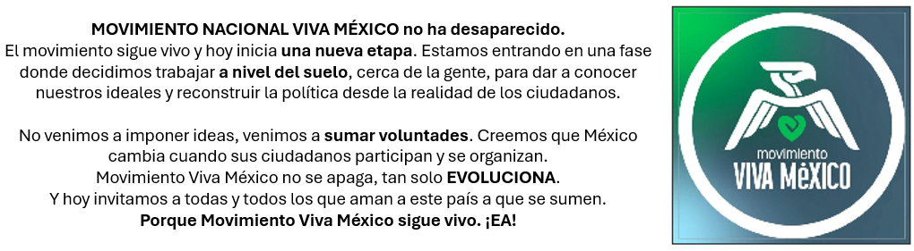

Apoya a Movimiento Viva México
Decálogo del Movimiento Viva México
- 1. Defensa de la vida desde la concepción hasta su término natural.
- 2. Protección a la familia natural.
- 3. Educación con valores.
- 4. Combate a la corrupción.
- 5. Transparencia y honestidad.
- 6. Justicia social para todos.
- 7. Promoción de la paz y la reconciliación.
- 8. Libertad religiosa y de conciencia.
- 9. Desarrollo económico con equidad.
- 10. Respeto al medio ambiente.
Compromisos del Movimiento Viva México
Contra la legalización del aborto
A favor de la vida en todas sus etapas
Contra la ideología de género
Registra tu apoyo ciudadano a través de la app oficial del INE: Mi Apoyo Ciudadano.
Desde tu tienda de aplicaciones
Descarga la app que corresponda:
Pasos para brindar tu APOYO
- 1. Abre la app y acepta los permisos necesarios.
- 2. Selecciona el partido o agrupación que deseas apoyar.
- 3. Ingresa tu CURP para validar tus datos.
- 4. Escanea ambos lados de tu INE vigente.
- 5. Tómate una selfie con buena iluminación.
- 6. Firma en la pantalla del celular con tu dedo.
- 7. Confirma los datos y envía tu apoyo.
- 8. ✅ ¡Listo! Tu apoyo ha sido registrado correctamente.
ℹ Notas importantes:
- Sólo puedes apoyar a una agrupación política.
- No puedes participar si tu INE está vencida.
- El apoyo es válido sólo durante el periodo que determine el INE (Hasta Febrero del 2026).
- No es posible firmar varias personas en modo mi apoyo con un mismo dispositivo. En modo auxiliar sí.
❓ Preguntas Frecuentes (FAQ)
¿Necesito estar afiliado a un partido político?
No.¿Es seguro proporcionar mis datos?
Sí, tu información es tratada con privacidad.¿Qué pasa si mi INE está por vencer?
Aún puedes apoyar si está vigente hoy.
🎥 Video Explicativo
Puedes ver el proceso completo en el siguiente video:
¿Deseas que te contactemos?
Mandanos tu dirección de correo
O si lo prefieres, puedes mandar un mensaje
de WhatsApp al: +52 33 2027 6238